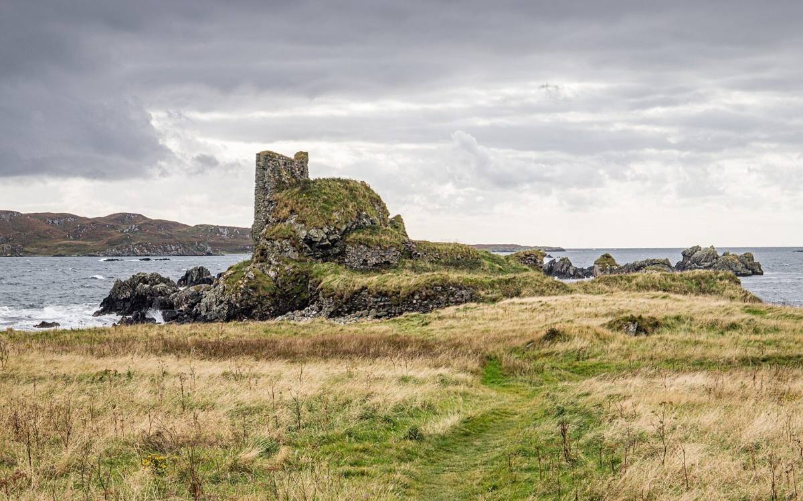

Lagavulin Bay was the naval harbour of the MacDonald Lords of the Isles, guarded by Dunyvaig Castle on the rocks at its mouth. The castle was besieged and taken four times in the 1600s and pulled down by the Campbells in 1677.
Smugglers were making whisky in bothies round the bay as early as the 1740s. John Johnston founded the legal distillery in 1816, and by 1837 two neighbouring distilleries had been merged into the one you see today. White Horse owned it by the 1920s, and it is now part of Diageo.
Lagavulin stopped malting its own barley in 1974. The malt now comes from the big Port Ellen maltings, the building you'll walk past on the way home to the house.
Don't miss: walk out on the headland east of the bay to the castle ruins. It's the classic view back across the water to the distillery, and only a few minutes from the visitor centre.
